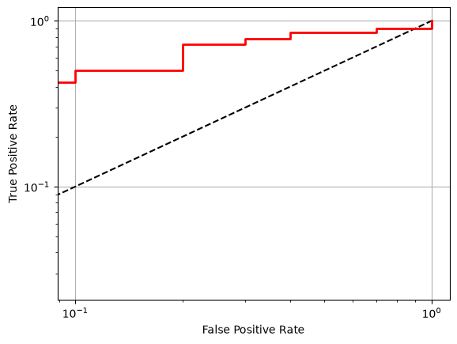
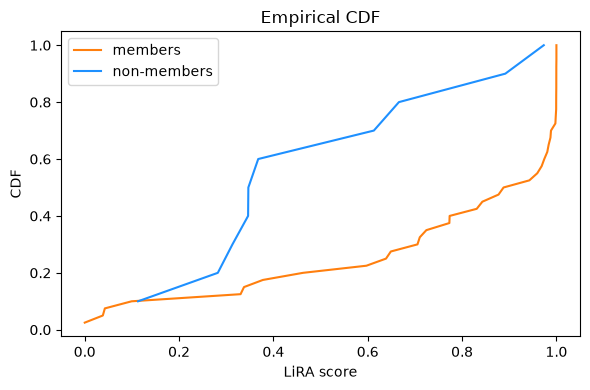

Example training and auditing a simple PyTorch model with SACRO-ML#
Overview#
The researcher creates
dataset.py,model.py, andtrain.pyfiles containing standard modular PyTorch code for preprocessing data and training a model.The researcher creates a script to execute the aforementioned modules, training, and then saving the final model along with the code using a helper wrapper class from the SACRO-ML library called
Target.The researcher or an auditor then runs a script for loading the saved model and code, defines the audits (attacks) to run and executes them, generating a report.
Researcher: dataset.py#
Dataset handling functions can be supplied in a module named dataset.py.
The
dataset.pymust contain a class for creating/loading the data.The dataset class must implement the abstract
sacroml.attacks.data.PyTorchDataHandler.This module can subsequently be passed to the
sacroml.attacks.target.Targetconvienence class to wrap the model and data for running privacy audits.The file path to the dataset module must later be specified in the
Targetclass withdataset_module_path.The
Targetparameterdataset_namemust match the name of the dataset class.If supplying a
dataset_module_paththe indices must be passed asindices_trainandindices_test.If you do not use a
dataset.py, you can pass numpy arrays directly toTargetasX_train, etc., and the data will be copied.
[1]:
%%writefile dataset.py
"""Example dataset handler with Synthetic data."""
from collections.abc import Sequence
import torch
from sklearn.datasets import make_classification
from sklearn.model_selection import train_test_split
from sklearn.preprocessing import StandardScaler
from torch.utils.data import DataLoader, Dataset, Subset, TensorDataset
from sacroml.attacks.data import PyTorchDataHandler
random_state = 2
class Synthetic(PyTorchDataHandler):
"""Synthetic dataset handler."""
def __init__(self) -> None:
"""Create synthetic data."""
self.X, self.y = make_classification(
n_samples=50,
n_features=4,
n_informative=2,
n_redundant=0,
n_repeated=0,
n_classes=4,
n_clusters_per_class=1,
random_state=random_state,
)
# Store raw unprocessed data
X_tensor = torch.FloatTensor(self.X)
y_tensor = torch.LongTensor(self.y)
self.raw_dataset = TensorDataset(X_tensor, y_tensor)
# Preprocess
self.feature_encoder = StandardScaler()
X_transformed = self.feature_encoder.fit_transform(self.X)
# Store processed data
X_tensor = torch.FloatTensor(X_transformed)
y_tensor = torch.LongTensor(self.y)
self.dataset = TensorDataset(X_tensor, y_tensor)
def __len__(self) -> int:
"""Return the length of the dataset."""
return len(self.dataset)
def get_raw_dataset(self) -> Dataset | None:
"""Return a raw unprocessed dataset."""
return self.raw_dataset
def get_dataset(self) -> Dataset:
"""Return a preprocessed dataset."""
return self.dataset
def get_dataloader(
self,
dataset: Dataset,
indices: Sequence[int],
batch_size: int = 32,
shuffle: bool = False,
) -> DataLoader:
"""Return a data loader with a requested subset of samples."""
subset = Subset(dataset, indices)
return DataLoader(subset, batch_size=batch_size, shuffle=shuffle)
def get_train_test_indices(self) -> tuple[Sequence[int], Sequence[int]]:
"""Return train and test set indices."""
indices = range(len(self))
train, test = train_test_split(
indices, test_size=0.2, stratify=self.y, random_state=random_state
)
return train, test
Overwriting dataset.py
Researcher: model.py#
The PyTorch model class can be supplied in a module named model.py.
The
model.pymust contain a PyTorch model class with a constructor.This module can subsequently be passed to the
sacroml.attacks.target.Targetwrapper class.All parameters used by the constructor must be specified under
model_params.The file path to the model module must be specified under
model_module_path.
[2]:
%%writefile model.py
"""An example Pytorch classifier."""
import torch
class OverfitNet(torch.nn.Module):
"""An example Pytorch classification model."""
def __init__(self, x_dim: int, y_dim: int, n_units: int) -> None:
"""Construct a simple Pytorch model."""
super().__init__()
self.layers = torch.nn.Sequential(
torch.nn.Linear(x_dim, n_units),
torch.nn.ReLU(),
torch.nn.Linear(n_units, y_dim),
)
def forward(self, x: torch.Tensor) -> torch.Tensor:
"""Forward propagate input."""
return self.layers(x)
Overwriting model.py
Researcher: train.py#
Model training functions can be supplied in a module named train.py.
The
train.pymust contain atrain()function.The
train()function must have parameters:model: torch.nn.ModulePyTorch model to train.dataloader: torch.utils.data.DataLoadertraining set DataLoader.
The
train()function may contain optional extra parameters.The file path to this training module can later be supplied to the
sacroml.attacks.target.Targetwrapper withtrain_module_path.All training parameters must be passed to
Targetwith the argumenttrain_params.
[3]:
%%writefile train.py
"""An example PyTorch training module."""
import torch
from torch import nn, optim
from torch.utils.data import DataLoader
def train(
model: nn.Module,
dataloader: DataLoader,
epochs: int,
learning_rate: float,
momentum: float,
) -> None:
"""Train model."""
device = torch.device("cuda" if torch.cuda.is_available() else "cpu")
model = model.to(device)
criterion = torch.nn.CrossEntropyLoss()
optimizer = optim.SGD(model.parameters(), lr=learning_rate, momentum=momentum)
model.train()
for _ in range(epochs):
for inputs, labels in dataloader:
X = inputs.to(device, non_blocking=True)
y = labels.to(device, non_blocking=True)
optimizer.zero_grad()
logits = model(X)
loss = criterion(logits, y)
loss.backward()
optimizer.step()
def get_accuracy(model: nn.Module, dataloader: DataLoader) -> float:
"""Return model accuracy as a percentage."""
device = torch.device("cuda" if torch.cuda.is_available() else "cpu")
model = model.to(device)
model.eval()
correct, total = 0, 0
with torch.no_grad():
for inputs, labels in dataloader:
X, y = inputs.to(device), labels.to(device)
logits = model(X)
_, predicted = torch.max(logits, 1)
correct += (predicted == y).sum().item()
total += y.size(0)
return 100 * correct / total
Overwriting train.py
Researcher: Execute training and save model and data#
This creates a “target” folder with the saved model and source code for subsequent auditing.
[4]:
"""Train a classifier on synthetic data using sacroml Target and Dataset classes."""
import logging
import torch
import train
from dataset import Synthetic
from model import OverfitNet
from sacroml.attacks.target import Target
target_dir = "target_pytorch"
random_state = 2
torch.manual_seed(random_state)
if torch.cuda.is_available():
torch.cuda.manual_seed_all(random_state)
logging.info(torch.cuda.get_device_name(torch.cuda.current_device()))
else:
logging.info("Found no NVIDIA driver on your system")
#############################################################################
# Dataset loading and model training
#############################################################################
logging.info("Loading dataset")
# Access dataset
data_handler = Synthetic()
# Get the (preprocessed) dataset
dataset = data_handler.get_dataset()
# Create data splits
indices_train, indices_test = data_handler.get_train_test_indices()
# Made explicit so the same value can be recorded on the Target below.
batch_size = 32
train_loader = data_handler.get_dataloader(
dataset, indices_train, batch_size=batch_size, shuffle=True
)
test_loader = data_handler.get_dataloader(
dataset, indices_test, batch_size=batch_size, shuffle=False
)
logging.info("Defining the model")
model_params = {
"x_dim": 4,
"y_dim": 4,
"n_units": 1000,
}
train_params = {
"epochs": 1000,
"learning_rate": 0.001,
"momentum": 0.9,
}
model = OverfitNet(**model_params)
logging.info("Training the model")
train.train(model, train_loader, **train_params)
logging.info("Evaluating the model")
train_acc = train.get_accuracy(model, train_loader)
test_acc = train.get_accuracy(model, test_loader)
print(f"Accuracy on train set: {train_acc:.2f}%")
print(f"Accuracy on test set: {test_acc:.2f}%")
#############################################################################
# Below shows the use of the Target class to help generate the target_dir/
# If you have already saved your model, you can use the CLI target generator.
#############################################################################
logging.info("Wrapping the model and data in a Target object")
target = Target(
model=model,
model_module_path="model.py",
model_params=model_params, # Must match all required in model constructor
train_module_path="train.py",
train_params=train_params, # Must match all required in the train function
batch_size=batch_size, # Should match the training batch size
dataset_module_path="dataset.py",
dataset_name="Synthetic", # Must match the class name in dataset module
indices_train=indices_train,
indices_test=indices_test,
)
logging.info("Writing Target object to directory: '%s'", target_dir)
target.save(target_dir)
INFO:root:NVIDIA GeForce RTX 4070 Laptop GPU
INFO:root:Loading dataset
INFO:root:Defining the model
INFO:root:Training the model
INFO:root:Evaluating the model
INFO:root:Wrapping the model and data in a Target object
INFO:root:Writing Target object to directory: 'target_pytorch'
Accuracy on train set: 100.00%
Accuracy on test set: 70.00%
Researcher/Auditor: Define and execute the audit (attacks)#
In this example we run:
WorstCaseAttackwhich trains a binary classifier to predict membership using the model confidence scores with the hypothesis that the output distributions differ for training and test records.LIRAAttackwhich trains reference models with the same parameters and architecture both with and without each record and estimates the loss distributions associated with membership and non-membership. Membership is then inferred via a likelihood-ratio test.StructuralAttackwhich computes various vulnerability metrics, including generalisation gap.
For each attack/audit the method is the same:
Create or load a
Targetobject which includes the model and data to be audited.Instantiate the desired attack/audit object.
Run the attack object’s
attack()method with theTargetobject passed.
The results of the audit are saved in the “output” folder as machine-readable JSON and human-readable PDF. The results can also be interogated programmatically.
Loading Target#
[5]:
"""Example of how to run attacks on a model saved with the Target wrapper."""
import logging
import matplotlib.pyplot as plt
import numpy as np
from sacroml.attacks.likelihood_attack import LIRAAttack
from sacroml.attacks.structural_attack import StructuralAttack
from sacroml.attacks.target import Target
from sacroml.attacks.worst_case_attack import WorstCaseAttack
output_dir = "output_pytorch"
target_dir = "target_pytorch"
logging.info("Loading Target object from '%s'", target_dir)
target = Target()
target.load(target_dir)
INFO:root:Loading Target object from 'target_pytorch'
INFO:sacroml.attacks.target:Loaded: PytorchModel : OverfitNet
INFO:sacroml.attacks.target:indices_train length: 40
INFO:sacroml.attacks.target:indices_test length: 10
INFO:sacroml.attacks.target:Loaded: X_train shape: (40, 4)
INFO:sacroml.attacks.target:Loaded: y_train shape: (40,)
INFO:sacroml.attacks.target:Loaded: X_test shape: (10, 4)
INFO:sacroml.attacks.target:Loaded: y_test shape: (10,)
INFO:sacroml.attacks.target:Loaded: X_train_orig shape: (40, 4)
INFO:sacroml.attacks.target:Loaded: y_train_orig shape: (40,)
INFO:sacroml.attacks.target:Loaded: X_test_orig shape: (10, 4)
INFO:sacroml.attacks.target:Loaded: y_test_orig shape: (10,)
Binary attack classifier#
[6]:
attack = WorstCaseAttack(n_reps=10, output_dir=output_dir)
result = attack.attack(target)
INFO:sacroml.attacks.worst_case_attack:Running main attack repetitions
INFO:sacroml.attacks.worst_case_attack:Sorting probabilities to leave highest value in first column
INFO:sacroml.attacks.worst_case_attack:Creating MIA data
INFO:sacroml.attacks.worst_case_attack:Rep 1 of 10
INFO:sacroml.attacks.worst_case_attack:Rep 2 of 10
INFO:sacroml.attacks.worst_case_attack:Rep 3 of 10
INFO:sacroml.attacks.worst_case_attack:Rep 4 of 10
INFO:sacroml.attacks.worst_case_attack:Rep 5 of 10
INFO:sacroml.attacks.worst_case_attack:Rep 6 of 10
INFO:sacroml.attacks.worst_case_attack:Rep 7 of 10
INFO:sacroml.attacks.worst_case_attack:Rep 8 of 10
INFO:sacroml.attacks.worst_case_attack:Rep 9 of 10
INFO:sacroml.attacks.worst_case_attack:Rep 10 of 10
INFO:sacroml.attacks.worst_case_attack:Finished simulating attacks
INFO:sacroml.attacks.worst_case_attack:Running dummy attack reps
INFO:sacroml.attacks.worst_case_attack:Sorting probabilities to leave highest value in first column
INFO:sacroml.attacks.worst_case_attack:Creating MIA data
INFO:sacroml.attacks.worst_case_attack:Rep 1 of 10
INFO:sacroml.attacks.worst_case_attack:Rep 2 of 10
INFO:sacroml.attacks.worst_case_attack:Rep 3 of 10
INFO:sacroml.attacks.worst_case_attack:Rep 4 of 10
INFO:sacroml.attacks.worst_case_attack:Rep 5 of 10
INFO:sacroml.attacks.worst_case_attack:Rep 6 of 10
INFO:sacroml.attacks.worst_case_attack:Rep 7 of 10
INFO:sacroml.attacks.worst_case_attack:Rep 8 of 10
INFO:sacroml.attacks.worst_case_attack:Rep 9 of 10
INFO:sacroml.attacks.worst_case_attack:Rep 10 of 10
INFO:sacroml.attacks.worst_case_attack:Finished simulating attacks
INFO:sacroml.attacks.worst_case_attack:Finished running attacks
INFO:sacroml.attacks.attack:Generating report
INFO:sacroml.attacks.attack:Writing report: output_pytorch/report.json output_pytorch/report.pdf
[7]:
res_wc = result["attack_experiment_logger"]["attack_instance_logger"]["instance_0"]
print(f"AUC = {res_wc['AUC']:.2f}")
print(f"TPR@0.1% FPR = {res_wc['TPR@0.1%']}")
print(f"TPR@0.001% FPR = {res_wc['TPR@0.001%']}")
AUC = 0.38
TPR@0.1% FPR = 0.375
TPR@0.001% FPR = 0.375
Likelihood ratio attack#
[8]:
attack = LIRAAttack(n_shadow_models=64, report_individual=True, output_dir=output_dir)
result = attack.attack(target)
WARNING:sacroml.attacks.utils:Target model is not a scikit-learn BaseEstimator (got OverfitNet); class-index remapping skipped. Downstream attacks that use predict_proba column indices (e.g. QMIA) may produce wrong hinge scores if y_train/y_test values don't already match model.classes_ positions.
INFO:sacroml.attacks.likelihood_attack:Running offline LiRA, fix_variance=False
INFO:sacroml.attacks.utils:Training shadow models
INFO:sacroml.attacks.utils:Trained 0 models
INFO:sacroml.attacks.utils:Trained 10 models
INFO:sacroml.attacks.utils:Trained 20 models
INFO:sacroml.attacks.utils:Trained 30 models
INFO:sacroml.attacks.utils:Trained 40 models
INFO:sacroml.attacks.utils:Trained 50 models
INFO:sacroml.attacks.utils:Trained 60 models
INFO:sacroml.attacks.likelihood_attack:Getting signals from 64 shadow models
INFO:sacroml.attacks.likelihood_attack:Computing scores
INFO:sacroml.attacks.likelihood_attack:Finished scenario
INFO:sacroml.attacks.attack:Generating report
INFO:sacroml.attacks.attack:Writing report: output_pytorch/report.json output_pytorch/report.pdf
[9]:
res_lira = result["attack_experiment_logger"]["attack_instance_logger"]["instance_0"]
print(f"AUC = {res_lira['AUC']:.2f}")
print(f"TPR@0.1% FPR = {res_lira['TPR@0.1%']}")
print(f"TPR@0.001% FPR = {res_lira['TPR@0.001%']}")
print(f"\nFraction of (out) losses normally distributed = {res_lira['n_normal']}")
AUC = 0.77
TPR@0.1% FPR = 0.425
TPR@0.001% FPR = 0.425
Fraction of (out) losses normally distributed = 0.42
[10]:
def roc_plot_single(metrics: dict) -> None:
"""Plot ROC for a single run."""
plt.figure()
plt.plot([0, 1], [0, 1], "k--")
plt.plot(metrics["fpr"], metrics["tpr"], "r", linewidth=2)
plt.xscale("log")
plt.yscale("log")
plt.grid()
plt.ylabel("True Positive Rate")
plt.xlabel("False Positive Rate")
def plot_lira_cdf(metrics: dict) -> None:
"""Compare LiRA vulnerability distributions."""
scores = np.array(metrics["individual"]["member_prob"])
member = np.array(metrics["individual"]["member"])
# members
mask = member == 1
train = scores[mask]
test = scores[~mask]
fig, ax = plt.subplots(1, 1, figsize=(6, 4))
# CDF
for scores, label, color in [
(train, "members", "tab:orange"),
(test, "non-members", "dodgerblue"),
]:
x = np.sort(scores)
y = np.arange(1, len(x) + 1) / len(x)
ax.plot(x, y, label=label, color=color)
ax.set_xlabel("LiRA score")
ax.set_ylabel("CDF")
ax.set_title("Empirical CDF")
ax.grid(False)
ax.legend()
plt.tight_layout()
plt.show()
LiRA ROC curve#
[11]:
roc_plot_single(res_lira)

LiRA record-level vulnerability scores#
[12]:
plot_lira_cdf(res_lira)

LiRA 10 most vulnerable records#
[13]:
def print_topk_individuals(metrics: dict, k: int = 10) -> None:
"""Display the top-k most vulnerable records."""
scores = np.array(metrics["individual"]["member_prob"])
member = np.array(metrics["individual"]["member"])
out_p_norm = np.array(metrics["individual"]["out_p_norm"])
mask = member == 1
y_train = scores[mask]
sorted_indicies = np.argsort(y_train)
print(f"LiRA {k} most vulnerable records:")
top_indices = sorted_indicies[-k:][::-1]
for i in top_indices:
print(f"index: {i}, score: {y_train[i]:.2f} (p_norm={out_p_norm[i]:.2f})")
[14]:
print_topk_individuals(res_lira, k=10)
LiRA 10 most vulnerable records:
index: 24, score: 1.00 (p_norm=0.63)
index: 11, score: 1.00 (p_norm=0.95)
index: 26, score: 1.00 (p_norm=0.18)
index: 18, score: 1.00 (p_norm=0.31)
index: 32, score: 1.00 (p_norm=0.00)
index: 37, score: 1.00 (p_norm=0.92)
index: 30, score: 1.00 (p_norm=0.68)
index: 23, score: 1.00 (p_norm=0.35)
index: 35, score: 1.00 (p_norm=0.07)
index: 20, score: 1.00 (p_norm=0.04)
Structural Metrics#
[15]:
attack = StructuralAttack(output_dir=output_dir)
result = attack.attack(target)
INFO:acro:version: 1.0.1
INFO:acro:config: {'safe_threshold': 10, 'safe_dof_threshold': 10, 'safe_nk_n': 2, 'safe_nk_k': 0.9, 'safe_pratio_p': 0.1, 'check_missing_values': False, 'survival_safe_threshold': 10, 'zeros_are_disclosive': True, 'safe_round_base': 5, 'federated': False, 'blocked_extensions': ['.svg', '.gph'], 'suppress': False}
INFO:acro:mitigation: none (round_base=5)
INFO:acro:federated: False
INFO:sacroml.attacks.structural_attack:Thresholds for count 10 and DoF 10
INFO:sacroml.attacks.structural_attack:Class of module is <class 'target_pytorch.model.OverfitNet'>
INFO:sacroml.attacks.structural_attack:Samples=40, Parameters=9004, DoF=-8964
INFO:sacroml.attacks.structural_attack:Unnecessary risk not define for models of type <class 'target_pytorch.model.OverfitNet'>
INFO:sacroml.attacks.structural_attack:Smallest equivalence class size (k-anonymity) is 1
INFO:sacroml.attacks.attack:Generating report
INFO:sacroml.attacks.attack:Writing report: output_pytorch/report.json output_pytorch/report.pdf
[16]:
res_struct = result["attack_experiment_logger"]["attack_instance_logger"]["instance_0"]
print(f"Generalisation Gap = {res_struct['generalisation_gap']:.2f}")
print(f"DoF Risk = {res_struct['dof_risk']}")
print(f"k Anonymity Risk = {res_struct['k_anonymity_risk']}")
print(f"Class Disclosure Risk = {res_struct['class_disclosure_risk']}")
print(f"Small Group Risk = {res_struct['smallgroup_risk']}")
Generalisation Gap = 0.30
DoF Risk = True
k Anonymity Risk = True
Class Disclosure Risk = True
Small Group Risk = True
Report#
[17]:
print(f"See report and files generated in folder: '{output_dir}'")
See report and files generated in folder: 'output_pytorch'
[ ]: